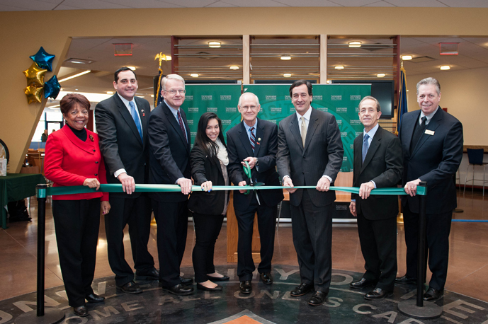
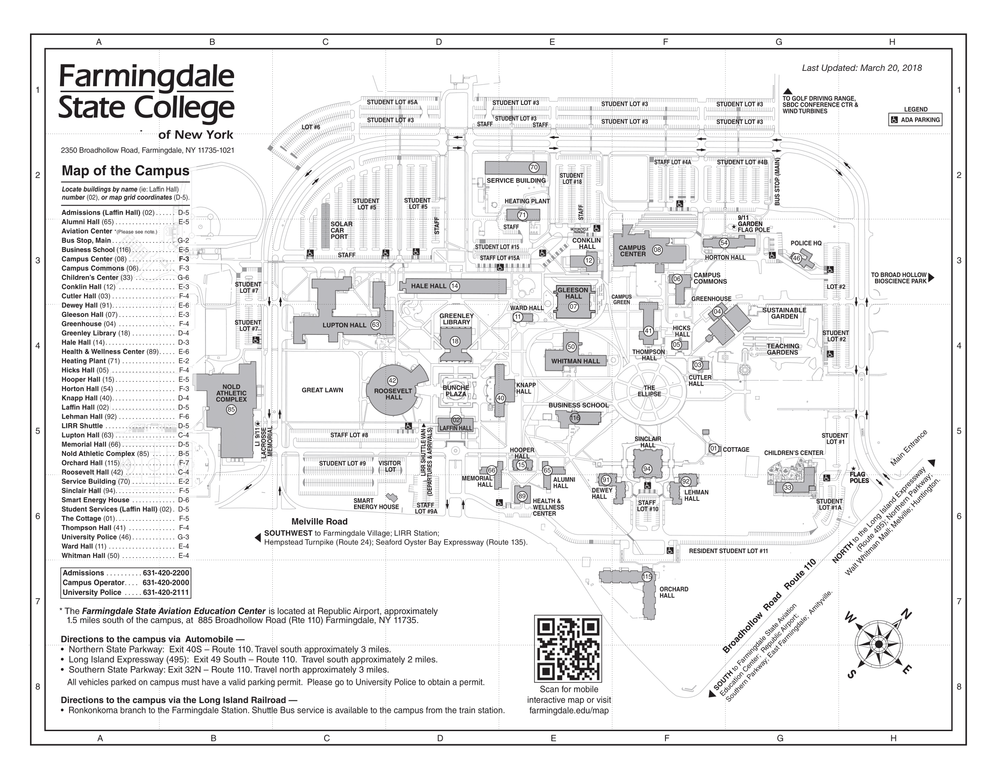

Campus Center
Farmingdale State College's new Campus Center is a 50,000-square foot, $25 million building and boasts new dining facilities for resident and commuter students, a campus bookstore, a ballroom for lectures and special events, a student lounge, and several unique architectural features. In keeping with the College's legacy of environmental sustainability, the Campus Center has a roof constructed of energy-efficient materials. The ballroom has a capacity of 400 for lectures and events, and 220 for dinner-style seating. A special feature of the building is the oculus--a rounded skylight--in the lobby that provides a spacious and inviting atmosphere as well as lounges which will help to ignite student-faculty interactions. The Center will be open everyday from 7am to 11pm.

The new Campus Center which features modern dining facilities, a more spacious bookstore, a ballroom and meeting rooms, plus a student lounge, opened January 2013. This new building serves as a campus gathering place, igniting student-faculty inter-actions, and provides a welcoming environment for visitors to the campus. And in keeping with Farmingdale's efforts in sustainability, the Campus Center also features an energy-efficient roofing structure. Legislators Bob Sweeney, Charles J. Fuschillo Jr., and Chad Lupinacci joined President Keen, student government president Amanda Lundberg and campus dignitaries at the ribbon-cutting ceremony.
Farmingdale State College began construction of a new Campus Center today which, when it opens in fall 2012, will be the first new academic or administrative building on the campus since 1983. The Campus Center will include new dining facilities for students, faculty, and staff, the campus bookstore, a multi-purpose room for lectures and special events, a student lounge, and several unique architectural features.
The Campus Center is the leading element of a $185M construction and renovation project that will last several years and includes a planned building for the School of Business, a new Information Commons, renovations of academic buildings and research laboratories, expansion and enhancement of athletic facilities, and reconfiguration of roadways.
The ground-breaking was attended by SUNY Trustee Cary Staller, State Senator Charles J. Fuschillo, Jr., and Assemblymen Bob Sweeney and Jim Conte, campus officials and students.
"This new Campus Center will be a hub of activity for the College," said Farmingdale State President W. Hubert Keen. "It also will serve as a symbol for the unprecedented growth and progress we are making in all the critical areas—applications, enrollment, quality of students, and the importance of our research enterprise. I want to thank SUNY for its support also Senator Fuschillo and Assemblyman Sweeney for leading the effort to secure funding for this and the many other projects we are developing."
"Farmingdale State College has grown tremendously over the last several years and is now one of the major institutions for higher education on Long Island," said Senator Fuschillo, who secured state funding for the project. "To continue that growth and better serve the community, the College needs to have a modern infrastructure. This is a project that will greatly benefit both students and faculty for years to come, and I'm pleased to see it moving forward."
"The Campus Center will be a focal point for student activity on the Farmingdale campus, and its construction is indicative of the exciting things that are happening at Farmingdale," said Assemblyman Bob Sweeney, who has secured state funds for many construction and other projects at Farmingdale. "This is one of many significant projects on campus that will help continue the great tradition of opportunity at Farmingdale."
The Campus Center will be 50,000 square feet and, in keeping with the College's legacy of environmental sustainability, will have a roof constructed of energy-efficient materials. The multi-purpose room will have a capacity of 400 for lectures and events and 220 for dinner-style seating. A special feature of the building will be an oculus—a rounded skylight—that will provide a spacious and inviting atmosphere and help ignite student-faculty interactions.
The Campus Center is being built by J. Kokolakis Contracting Inc. of Bohemia.
You will turn into the campus off of Route 110 and Smith Street. Once you are on the campus, follow the main road all the way down until you see Horton Hall (Administration Building) on your left. Turn left into the parking lot after the first speed bump. You may park in the big parking lot. The Campus Center will be directly ahead of you and to the right of Horton Hall (Administration Building).
